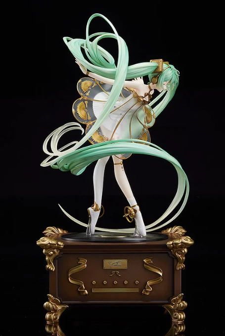

From "Character Vocal Series 01: Hatsune Miku" comes a scale figure of Hatsune Miku from the main visual illustration of the full orchestra concert "Hatsune Miku Symphony 2020 ~5th Anniversary~". Illustrator Rella's fantastic, beautiful main visual illustration has been carefully brought into figure form. Miku's gramophone-inspired dress features translucent parts and delicate pearl and gold paintwork. In addition to her face with closed eyes, an interchangeable smiling face part is included. From her flowing hair to the tips of her fingers and toes, the figure is packed with charm. The base of the figure also features a small drawer for storage, allowing you to store the music box included with the figure inside. Be sure to preorder her for your collection!
Price: € 199,99